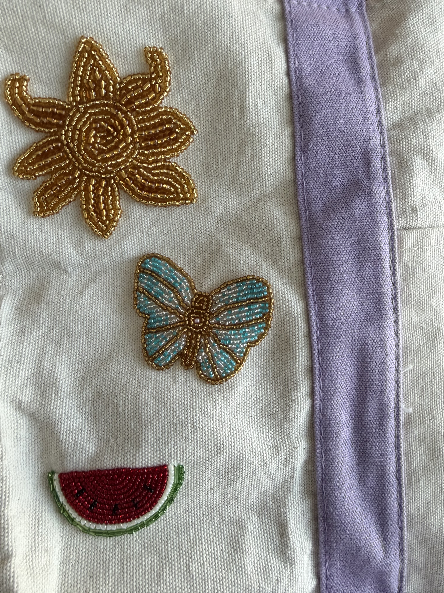

One hobby I've recently picked up is bead embroidery. It's just like regular embroidery, except that with each stitch, you loop a bead onto the needle so that the design is created by beads rather than the embroidery floss, which gives it more dimension. I've always wanted to get into bead embroidery because it's a huge part of South Asian culture. All of our cultural outfits are usually embroidered with all different kinds of beads, and the beadwork is so intricate and thoughtful that I wanted to see if I could recreate it myself. It definitely takes a lot more time and effort that I thought, but it's extremely rewarding when you finally finish a design. I bought a Trader Joe's tote bag that I've been embroidering with a bunch of designs that I found on Pinterest. So far, I've embroidered a sun, a watermelon, an evil eye amulet, a butterfly, and I've started to embroider a seashell. My favorite design so far is probably the butterfly because I love how the combination of the colors of beads looks together. The blue and white beads create such a cool pattern on the butterfly's wings. I'm always looking for more things to embroider onto the bag so, if you have any suggestions, please let me know!
